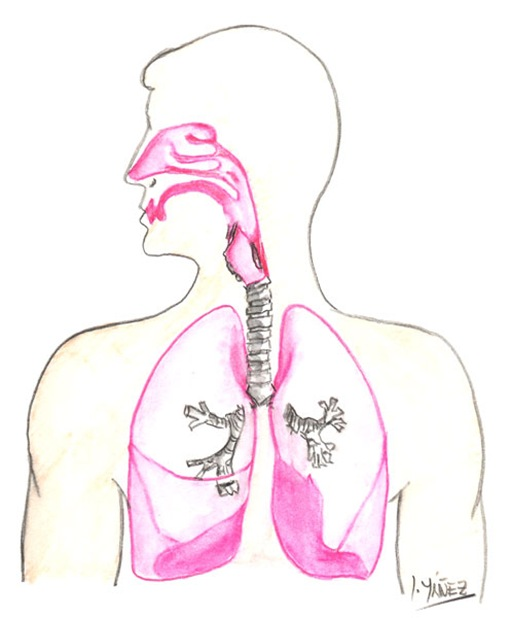
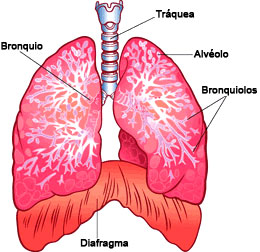

Aparato respiratorio
Introducción.
¿Sabias que cada día respiramos aproximadamente 20,000 veces
y para cuando tengas 70 años habremos aspirado al menos 600
millones de veces?
Hablando de pulmones y del sistema respiratorio, este
esta constituido por varias partes, una de las mas importantes
son.
Las vías respiratorias:
- Fosas nasales.
- La faringe.
- La laringe.
- La tráquea.
- Los bronquios.
- Los bronquíolos.
La boca también es, un órgano por donde entra y sale el aire durante la respiración.
Componentes
La laringe
Está situada en el comienzo de la tráquea. Es una cavidad formada por cartílagos que presenta una saliente llamada comúnmente nuez. En la laringe se encuentran las cuerdas vocales que, al vibrar, producen la voz.
La tráquea
Es un conducto de unos doce centímetros de longitud. Está situada delante del esófago.
Los bronquios
Son los dos tubos en que se divide la tráquea. Penetran en los pulmones, donde se ramifican una multitud de veces, hasta llegar a formar los bronquiolos.
Alvéolos
En los alvéolos se realiza el intercambio gaseoso: cuando los alvéolos se llenan con el aire inhalado, el oxígeno se difunde hacia la sangre de los capilares, que es bombeada por el corazón hasta los tejidos del cuerpo.

Proceso de inspiración y exhalación
Inspiración
Cuando el diafragma se contrae y se mueve hacia abajo, los músculos
pectorales menores y los intercostales presionan las costillas hacia fuera.
Exhalación.
Cuando el diafragma se relaja, adopta su posición normal, curvado hacia arriba,
entonces los pulmones se contraen y el aire se expele.
Trastornos del Aparato Respiratorio
Entre los síntomas más corrientes de los trastornos respiratorios se destacan la tos, el ahogo (disnea), el dolor torácico, la respiración sibilante, el estridor (sonido semejante a un graznido al respirar), la hemoptisis (esputo con sangre), la cianosis (coloración azulada de la piel), los dedos en palillo de tambor y la insuficiencia respiratoria. Algunos de estos síntomas no siempre indican un problema respiratorio. El dolor de pecho también puede ser consecuencia de un problema cardíaco o astrointestinal.
Tos
Cuando el diafragma se contrae, la cavidad torácica se ensancha reduciendo la presión interior. Para igualar la presión, el aire entra en los pulmones. Cuando el diafragma se relaja, la cavidad torácica se contrae aumentando de este modo la presión y expulsando el aire de los pulmones.
Ahogo
El tipo más frecuente de ahogo es el que aparece al realizar un esfuerzo físico. Durante el ejercicio, el cuerpo produce más anhídrido carbónico y consume mayor cantidad de oxígeno. El centro respiratorio del cerebro aumenta la frecuencia respiratoria cuando las concentraciones de oxígeno en sangre son bajas, o cuando las del anhídrido carbónico son altas. Por otra parte, si la función pulmonar y cardíaca son anormales, incluso un pequeño esfuerzo puede aumentar de forma alarmante la frecuencia respiratoria y la disnea. En su forma más grave, la disnea puede incluso manifestarse durante el reposo.
Dolor de pecho
El dolor torácico puede provenir de la pleura, de los pulmones, de la pared del tórax o de estructuras internas que no forman parte del aparato respiratorio, especialmente el corazón.El dolor pleural, un dolor agudo a consecuencia de una irritación del revestimiento de los pulmones, empeora al efectuar una inspiración profunda y al toser.
Sibilancias
La respiración sibilante es un sonido musical, como un silbido, que se produce durante la respiración, a consecuencia de la obstrucción parcial de las vías respiratorias. La obstrucción en cualquier punto de la vía aérea provoca sibilancias. Sus causas pueden ser un estrechamiento general de las vías respiratorias (como asma o la enfermedad pulmonar obstructiva crónica), un estrechamiento local (como un tumor), o la presencia de una partícula extraña alojada en las vías aéreas. El asma es la causa más frecuente de sibilancias recurrentes.
Estridor
El estridor es un sonido semejante a un graznido y es predominantemente inspiratorio; es consecuencia de una obstrucción parcial de la garganta (faringe), de la caja de los órganos de la fonación (laringe) o de la tráquea.
Hemoptisis
La hemoptisis es una expectoración de sangre proveniente del tracto respiratorio. El esputo teñido de sangre es más bien corriente y no siempre es grave. Alrededor del 50 por ciento de los casos se debe a infecciones como la bronquitis aguda o crónica. No obstante, una hemoptisis abundante requiere un diagnóstico rápido por parte del médico.
Cianosis
La cianosis es una coloración azulada de la piel causada por una oxigenación insuficiente de la sangre. La cianosis se produce cuando la sangre desprovista de oxígeno, que es más azulada que roja, circula por los vasos de la piel. Habitualmente, la cianosis que está restringida a los dedos de las manos y de los pies, se produce porque la sangre fluye muy lentamente a través de los miembros.
Dedos en palillo de tambor
Los dedos en palillo de tambor son un ensanchamiento de las puntas de los dedos de las manos y de los pies, con una pérdida del ángulo de salida de la uña. A menudo esta deformación de los dedos (que en sí misma no reviste gravedad) es consecuencia de una enfermedad pulmonar, aunque otras enfermedades también pueden producirla. En algunas familias los dedos en palillo de tambor no están relacionados con ninguna enfermedad y son hereditarios.
Insuficiencia respiratoria
La insuficiencia respiratoria es una enfermedad en la cual disminuyen los valores de oxígeno en sangre o aumentan los de anhídrido carbónico de forma peligrosa. La insuficiencia respiratoria se debe al intercambio inadecuado de oxígeno y anhídrido carbónico entre los pulmones y la sangre o a una alteración de la ventilación (movimiento del aire hacia dentro y fuera de los pulmones).